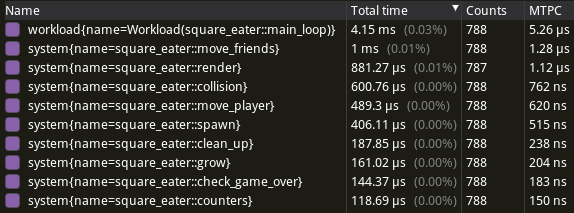
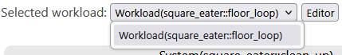
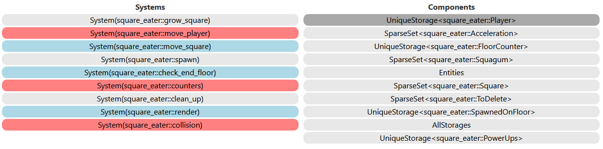
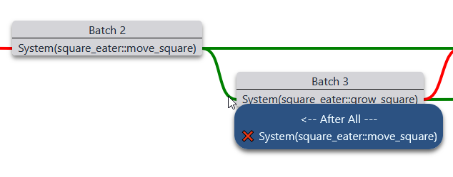
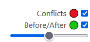

Welcome to Shipyard!
Shipyard is an Entity Component System focused on usability and flexibility.
ECS is a great way to organize logic and data:
- Elegant approach for humans
- Composition over inheritance
- Separation of concerns
- Less burdened by lifetimes
- Optimal design for computers
- Spatial locality
- Less pointer chasing
However, programming with an ECS requires thinking about data and logic in a different way than you might be used to.
How does it work?
Components hold data. Entities are a group of components identified by an Id.
Systems do the heavy lifting: updating components, running side-effects, and integrating with other parts of the code.
Learn
You can either build a small game with shipyard's concepts showed as you encounter them.
Or go through a more packed format.
I want to build a small game
I prefer a packed format
Learn by example
In this section you'll learn how to use shipyard by building a small game.
Dependencies
We'll only use two dependencies, let's add them to Cargo.toml.
macroquad = "0.4.8"
shipyard = { git = "https://github.com/leudz/shipyard", default-features = false, features = [
"proc",
"std",
] }
A lone square
Let's start with a blank window.
use macroquad::prelude::*;
#[macroquad::main("Square Eater")]
async fn main() {
loop {
next_frame().await
}
}Then let's add the player. This game is all about squares so naturally the player is one.
struct Square {
x: f32,
y: f32,
size: f32,
}
struct Player {
square: Square,
}We can now it add the scene.
#[macroquad::main("Square Eater")]
async fn main() {
let x = screen_width() / 2.0;
let y = screen_height() / 2.0;
let player = Player {
square: Square { x, y, size: 15.0 },
};
loop {
clear_background(WHITE);
render(&player);
next_frame().await
}
}
impl Square {
fn render(&self, color: Color) {
draw_rectangle(self.x, self.y, self.size, self.size, color);
}
}
fn render(player: &Player) {
player.square.render(BLUE);
}Our player looks a bit stiff, we can fix that.
async fn main() {
// -- SNIP --
let mut player = Player {
square: Square { x, y, size: 15.0 },
};
loop {
clear_background(WHITE);
move_player(&mut player);
render(&player);
next_frame().await
}
}
fn move_player(player: &mut Player) {
let width = screen_width();
let height = screen_height();
let (x, y) = mouse_position();
player.square.x = x.clamp(0.0, width - player.square.size);
player.square.y = y.clamp(0.0, height - player.square.size);
}Friends
Our player has the whole window to explore but they're feeling lonely.
We can add a few friends.
struct Friend(Square);We could store them in a Vec<Friend> but you're not here for a macroquad tutorial.
Instead we'll store them in a World.
World is shipyard's main type.
It's where everything is stored, from components to entities to systems.
In this guide, I'll be explicit about shipyard imports but you could use shipyard::*; if you prefer.
use macroquad::rand::gen_range;
use shipyard::{Component, World};
#[macroquad::main("Square Eater")]
async fn main() {
rand::srand(macroquad::miniquad::date::now() as u64);
// -- SNIP --
let mut world = World::new();
for _ in 0..5 {
let _entity_id = world.add_entity(Friend::new());
}
loop {
clear_background(WHITE);
move_player(&mut player);
render(&player, &world);
next_frame().await
}
}
fn render(player: &Player, world: &World) {
for friend in &mut world.iter::<&Friend>() {
friend.0.render(GREEN);
}
player.square.render(BLUE);
}
impl Friend {
fn new() -> Friend {
let width = screen_width();
let height = screen_height();
Friend(Square {
x: gen_range(0.0, width - 5.0),
y: gen_range(0.0, height - 5.0),
size: 5.0,
})
}
}This won't compile just yet, as Friend is not a Component.
Some ECS require you to explicitly specify which types are components and some don't.
One of the reasons shipyard requires it is to easily identify components in codebases.
With small projects, this isn't a big issue but as the number of lines grow, you'll have to find a way to identify components. This could be moving types to a component.rs, but I'd rather have modules split based on what they do.
Let's add the missing piece.
#[derive(Component)]
struct Friend(Square);Now add_entity can create 5 entities that are each composed of a single component.
Every entity is identified with an EntityId. It's a small handle that you can copy.
And iter let us iterate over components.
We can move Player into the World to simplify our code a little.
We only have a single Player and it will only ever have a single component.
For this kind of entities, shipyard has Unique components.
use shipyard::{Component, Unique, World};
async fn main() {
// -- SNIP --
let mut world = World::new();
let player = Player {
square: Square { x, y, size: 15.0 },
};
world.add_unique(player);
// -- SNIP --
loop {
clear_background(WHITE);
move_player(&world);
render(&world);
next_frame().await
}
}
#[derive(Unique)]
struct Player {
square: Square,
}
fn render(world: &World) {
for friend in &mut world.iter::<&Friend>() {
friend.0.render(GREEN);
}
let player = world.get_unique::<&Player>().unwrap();
player.square.render(BLUE);
}
fn move_player(world: &World) {
let width = screen_width();
let height = screen_height();
let (x, y) = mouse_position();
let mut player = world.get_unique::<&mut Player>().unwrap();
player.square.x = x.clamp(0.0, width - player.square.size);
player.square.y = y.clamp(0.0, height - player.square.size);
}We can simply further by using views. Views are temporary access of components.
use shipyard::{Component, IntoIter, Unique, UniqueView, UniqueViewMut, View, World};
async fn main() {
// -- SNIP --
loop {
clear_background(WHITE);
world.run(move_player);
world.run(render);
next_frame().await
}
}
fn render(player: UniqueView<Player>, v_friend: View<Friend>) {
for friend in v_friend.iter() {
friend.0.render(GREEN);
}
player.square.render(BLUE);
}
fn move_player(mut player: UniqueViewMut<Player>) {
let width = screen_width();
let height = screen_height();
let (x, y) = mouse_position();
player.square.x = x.clamp(0.0, width - player.square.size);
player.square.y = y.clamp(0.0, height - player.square.size);
}You've just written your first systems.
With shipyard, all functions that have only views as arguments are systems.
The World understands these functions and provides the desired components automatically.
The v_/vm_ prefix for views is a convention that some shipyard users use. I'll follow it throughout the guide.
Spark
Let's infuse a bit of life into our friends.
use shipyard::{Component, IntoIter, Unique, UniqueView, UniqueViewMut, View, ViewMut, World};
const GROWTH_RATE: f32 = 0.15;
const MAX_SIZE: f32 = 25.0;
async fn main() {
// -- SNIP --
world.run(move_player);
world.run(grow);
world.run(render);
// -- SNIP --
}
fn grow(mut vm_friend: ViewMut<Friend>) {
for friend in (&mut vm_friend).iter() {
let delta_size = (friend.0.size + GROWTH_RATE).min(MAX_SIZE) - friend.0.size;
friend.0.size = friend.0.size + delta_size;
friend.0.x = (friend.0.x - delta_size / 2.0).max(0.0);
friend.0.y = (friend.0.y - delta_size / 2.0).max(0.0);
}
}grow's code could be simpler but this version makes Friends grow from their center, which feels a lot more natural.
It appears our Friends want to come close to the Player, likely to give them a hug.
const SPEED: f32 = 1.5;
async fn main() {
// -- SNIP --
world.run(move_player);
world.run(move_friends);
world.run(grow);
world.run(render);
// -- SNIP --
}
impl Square {
// -- SNIP --
fn center(&self) -> Vec2 {
vec2(self.x + self.size / 2.0, self.y + self.size / 2.0)
}
}
fn move_friends(player: UniqueView<Player>, mut vm_friend: ViewMut<Friend>) {
let mut dirs = vec![Vec2::ZERO; vm_friend.len()];
for (friend, dir) in vm_friend.iter().zip(&mut dirs) {
if friend.0.size <= player.square.size {
continue;
}
let player_dir = player.square.center() - friend.0.center();
*dir = player_dir.normalize();
let mut neighbor_dir = Vec2::ZERO;
for neighbor in vm_friend.iter() {
if friend.0.center().distance_squared(neighbor.0.center())
< friend.0.size * friend.0.size / 1.5
{
neighbor_dir +=
Vec2::new(friend.0.x - neighbor.0.x, friend.0.y - neighbor.0.y);
}
}
*dir *= SPEED;
*dir += neighbor_dir * 0.05;
}
let width = screen_width();
let height = screen_height();
for (friend, dir) in (&mut vm_friend).iter().zip(dirs) {
if dir == Vec2::ZERO {
continue;
}
friend.0.x = (friend.0.x + dir.x).clamp(0.0, width - friend.0.size);
friend.0.y = (friend.0.y + dir.y).clamp(0.0, height - friend.0.size);
}
}As you can see, you can iterate views multiple times in the same system.
We also prevent the Friends from overlapping by stirring them away from their neighbors.
But something doesn't feel right...
async fn main() {
// -- SNIP --
world.run(move_player);
world.run(move_friends);
world.run(grow);
world.run(collision);
world.run(render);
// -- SNIP --
}
impl Square {
// -- SNIP --
fn collide(&self, other: &Square) -> bool {
self.x + self.size >= other.x
&& self.x <= other.x + other.size
&& self.y + self.size >= other.y
&& self.y <= other.y + other.size
}
}
fn collision(mut player: UniqueViewMut<Player>, v_friend: View<Friend>) {
for friend in v_friend.iter() {
if friend.0.size == MAX_SIZE && friend.0.collide(&player.square) {
player.square.size -= 5.0 / 2.;
if player.square.size < 5.0 {
panic!("Murder");
}
}
}
}Oh my god! The "Friends" killed the Player!?
Breather
Let's refactor a little to give us time to process this betrayal and think of a way to get our revenge.
You can move things around and maybe create modules.
We're using an initial size in a few spots, we can abstract it.
const INIT_SIZE: f32 = 5.0;
async fn main() {
// -- SNIP --
let player = Player {
square: Square {
x,
y,
size: INIT_SIZE * 3.0,
},
};
// -- SNIP --
}
impl Friend {
fn new() -> Friend {
// -- SNIP --
Friend(Square {
x: gen_range(0.0, width - INIT_SIZE),
y: gen_range(0.0, height - INIT_SIZE),
size: INIT_SIZE,
})
}
}
fn collision(mut player: UniqueViewMut<Player>, v_friend: View<Friend>) {
for friend in v_friend.iter() {
if friend.0.size == MAX_SIZE && friend.0.collide(&player.square) {
player.square.size -= INIT_SIZE / 2.;
if player.square.size < INIT_SIZE {
panic!("Murder");
}
}
}
}We can also handle the game over a little cleaner.
enum GameOver {
Defeat,
}
async fn main() {
// -- SNIP --
loop {
// -- SNIP --
if world.run(collision).is_err() {
panic!("Murder");
}
// -- SNIP --
}
}
fn collision(mut player: UniqueViewMut<Player>, v_friend: View<Friend>) -> Result<(), GameOver> {
for friend in v_friend.iter() {
if friend.0.size == MAX_SIZE && friend.0.collide(&player.square) {
player.square.size -= INIT_SIZE / 2.;
if player.square.size < INIT_SIZE {
return Err(GameOver::Defeat);
}
}
}
Ok(())
}Systems can return any type, World::run then returns when the function returns.
Moving the panic to main isn't a big change but it allows a better control of what happens which will be useful later on.
To conclude this chapter we can better show the duplicity of the "Friends".
fn render(player: UniqueView<Player>, v_friend: View<Friend>) {
for friend in v_friend.iter() {
if friend.0.size == MAX_SIZE {
friend.0.render(RED);
} else if friend.0.size > player.square.size {
friend.0.render(GRAY);
} else {
friend.0.render(GREEN);
}
}
player.square.render(BLUE);
}Reign
We've had plenty of time to think of a way for our Player to get back at those pesky Friends.
Sometimes, the simplest solution is the best.
If the Friends can overpower the Player when they are fully grown, we shouldn't let them reach that size.
I'm sure the Player can overcome Friend that are smaller than them.
use shipyard::{
Component, EntitiesView, IntoIter, IntoWithId, Unique, UniqueView, UniqueViewMut, View,
ViewMut, World,
};
#[derive(Component)]
struct ToDelete;
fn collision(
entities: EntitiesView,
mut player: UniqueViewMut<Player>,
v_friend: View<Friend>,
mut vm_to_delete: ViewMut<ToDelete>,
) -> Result<(), GameOver> {
for (eid, friend) in v_friend.iter().with_id() {
if friend.0.size == MAX_SIZE && friend.0.collide(&player.square) {
// -- SNIP --
} else if player.square.size >= friend.0.size && player.square.collide(&friend.0) {
player.square.size = (player.square.size + INIT_SIZE / 2.).min(MAX_SIZE - 0.01);
entities.add_component(eid, &mut vm_to_delete, ToDelete);
}
}
Ok(())
}It appears our Player can even overcome Friends of equal size.
By... eating them!?
Remember when we added Friends to the World, each one was assigned an EntityId.
We can iterate over both components and the EntityId of the entity that owns them by using with_id.
Then we can use this EntityId to add another component to the vanquished Friends.
As you may have noticed we are not modifying entities. We only need it to check that the eid is alive.
ToDelete is not a special component, we still have to make it do its job.
use shipyard::{
AllStoragesViewMut, Component, EntitiesView, IntoIter, IntoWithId, SparseSet, Unique,
UniqueView, UniqueViewMut, View, ViewMut, World,
};
async fn main() {
// -- SNIP --
loop {
clear_background(WHITE);
world.run(move_player);
world.run(move_friends);
world.run(grow);
if world.run(collision).is_err() {
panic!("Murder");
}
world.run(clean_up);
world.run(render);
next_frame().await
}
}
fn clean_up(mut all_storages: AllStoragesViewMut) {
all_storages.delete_any::<SparseSet<ToDelete>>();
}AllStorages is the part of World that stores all components and entities.
We are using it to delete_any entity that has a ToDelete component in a SparseSet storage.
SparseSet is the storage for all Components. Uniques have a different storage and you can add custom storages to the World but that's an advanced feature.
It's over
Defeating smaller Friends is nice but most of the time they've grown by the time the Player reaches them.
The Player needs more power.
use shipyard::{
AllStoragesViewMut, Component, EntitiesView, EntitiesViewMut, IntoIter, IntoWithId, SparseSet,
Unique, UniqueView, UniqueViewMut, View, ViewMut, World,
};
const POWER_PELLET_SPAWN_RATE: u32 = 150;
async fn main() {
// -- SNIP --
let player = Player {
square: Square {
x,
y,
size: INIT_SIZE * 3.0,
},
pellet_counter: 0,
};
// -- SNIP --
loop {
// -- SNIP --
world.run(grow);
world.run(counters);
world.run(spawn);
if world.run(collision).is_err() {
panic!("Murder");
}
// -- SNIP --
}
}
struct Player {
square: Square,
pellet_counter: u32,
}
impl Player {
fn power_up(&mut self) {
self.pellet_counter = 120;
}
fn is_powered_up(&self) -> bool {
self.pellet_counter > 0
}
}
#[derive(Component)]
struct PowerPellet(Square);
fn render(player: UniqueView<Player>, v_friend: View<Friend>, v_power_pellets: View<PowerPellet>) {
for pellet in v_power_pellets.iter() {
pellet.0.render(YELLOW);
}
// -- SNIP --
if player.is_powered_up() {
player.square.render(YELLOW);
} else {
player.square.render(BLUE);
}
}
fn collision(
entities: EntitiesView,
mut player: UniqueViewMut<Player>,
v_friend: View<Friend>,
v_power_pellets: View<PowerPellet>,
mut vm_to_delete: ViewMut<ToDelete>,
) -> Result<(), GameOver> {
for (eid, pellet) in v_power_pellets.iter().with_id() {
if player.square.collide(&pellet.0) {
player.power_up();
entities.add_component(eid, &mut vm_to_delete, ToDelete);
}
}
for (eid, friend) in v_friend.iter().with_id() {
if friend.0.size == MAX_SIZE && friend.0.collide(&player.square) {
if player.is_powered_up() {
player.square.size = (player.square.size + INIT_SIZE / 2.).min(MAX_SIZE - 0.01);
entities.add_component(eid, &mut vm_to_delete, ToDelete);
continue;
}
player.square.size -= INIT_SIZE / 2.;
// -- SNIP --
} else if player.square.size >= friend.0.size && player.square.collide(&friend.0) {
// -- SNIP --
}
}
Ok(())
}
fn counters(mut player: UniqueViewMut<Player>) {
player.pellet_counter = player.pellet_counter.saturating_sub(1);
}
fn spawn(mut entities: EntitiesViewMut, mut vm_power_pellets: ViewMut<PowerPellet>) {
let width = screen_width();
let height = screen_height();
let pellet_spawn_rate = if vm_power_pellets.is_empty() {
POWER_PELLET_SPAWN_RATE / 2
} else {
POWER_PELLET_SPAWN_RATE
};
if rand::gen_range(0, pellet_spawn_rate) == 0 {
let x = rand::gen_range(0.0, width - INIT_SIZE);
let y = rand::gen_range(0.0, height - INIT_SIZE);
entities.add_entity(
&mut vm_power_pellets,
PowerPellet(Square {
x,
y,
size: INIT_SIZE * 2.0,
}),
);
}
}The syntax to add entities is very similar to adding components.
But this time we need EntitiesViewMut.
With this change the Player is can now rest, stronger than ever.
True victory
It seems the Friends are able to copy the power pellets' spawning mechanic!
And they've learned to avoid the Player whenever they are powered up.
const FRIEND_SPAWN_RATE: u32 = 25;
fn move_friends(player: UniqueView<Player>, mut vm_friend: ViewMut<Friend>) {
// -- SNIP --
*dir = player_dir.normalize();
if player.is_powered_up() {
*dir = -*dir;
}
// -- SNIP --
}
fn spawn(
mut entities: EntitiesViewMut,
mut vm_friend: ViewMut<Friend>,
mut vm_power_pellets: ViewMut<PowerPellet>,
) {
// -- SNIP --
if rand::gen_range(0, FRIEND_SPAWN_RATE) == 0 {
let x = rand::gen_range(0.0, width - INIT_SIZE / 2.0);
let y = rand::gen_range(0.0, height - INIT_SIZE / 2.0);
entities.add_entity(
&mut vm_friend,
Friend(Square {
x,
y,
size: INIT_SIZE,
}),
);
}
}Let's give the Player a little bit of help and a way to win again.
In many games, whenever the player is hit they'll turn invincible for a few frames.
async fn main() {
// -- SNIP --
let player = Player {
// -- SNIP --
i_counter: 0,
};
// -- SNIP --
}
struct Player {
// -- SNIP --
i_counter: u32,
}
impl Player {
// -- SNIP --
fn turn_invincible(&mut self) {
self.i_counter = 5;
}
fn is_invincible(&self) -> bool {
self.i_counter > 0
}
}
fn collision(
entities: EntitiesView,
mut player: UniqueViewMut<Player>,
v_friend: View<Friend>,
v_power_pellets: View<PowerPellet>,
mut vm_to_delete: ViewMut<ToDelete>,
) -> Result<(), GameOver> {
// -- SNIP --
if player.powered_up() {
// -- SNIP --
} else if player.is_invincible() {
continue;
}
player.square.size -= INIT_SIZE / 2.;
player.turn_invincible();
// -- SNIP --
}
fn counters(mut player: UniqueViewMut<Player>) {
player.pellet_counter = player.pellet_counter.saturating_sub(1);
player.i_counter = player.i_counter.saturating_sub(1);
}We'll conclude this guide by allowing the Player to win.
use shipyard::{
AllStoragesViewMut, Component, EntitiesView, EntitiesViewMut, IntoIter, IntoWithId,
IntoWorkload, IntoWorkloadTrySystem, SparseSet, Unique, UniqueView, UniqueViewMut, View,
ViewMut, Workload, World,
};
async fn main() {
// -- SNIP --
for _ in 0..5 {
let _entity_id = world.add_entity(Friend::new());
}
world.add_workload(main_loop);
loop {
clear_background(WHITE);
world.run_workload(main_loop);
next_frame().await
}
}
#[derive(Debug)]
enum GameOver {
Defeat,
Victory,
}
impl std::fmt::Display for GameOver {
fn fmt(&self, f: &mut std::fmt::Formatter<'_>) -> std::fmt::Result {
std::fmt::Debug::fmt(self, f)
}
}
impl std::error::Error for GameOver {}
fn main_loop() -> Workload {
(
move_player,
move_friends,
grow,
counters,
spawn,
collision,
clean_up,
check_game_over.into_workload_try_system().unwrap(),
render,
)
.into_workload()
}
fn collision(
// -- SNIP --
) {
// -- SNIP --
player.square.size -= INIT_SIZE / 2.;
player.turn_invincible();
// No more return
} else if player.square.size >= friend.0.size && player.square.collide(&friend.0) {
// -- SNIP --
}
}
// No more Ok(())
}
fn check_game_over(player: UniqueView<Player>, v_friends: View<Friend>) -> Result<(), GameOver> {
if player.square.size < INIT_SIZE {
Err(GameOver::Defeat)
} else if v_friends.is_empty() {
Err(GameOver::Victory)
} else {
Ok(())
}
}Workloads are a collection of systems.
We only have a single Workload in our game since it's quite small.
You would usually have smaller Workloads that make up larger ones.
Apart from organization, Workloads are automatically run across multiple threads, which can usually boost performance.
The last touch is to handle check_game_over's return value.
We use into_workload_try_system to explicitly inform the Workload that this system might return something, but we don't handle it anywhere.
async fn main() {
// -- SNIP --
loop {
clear_background(WHITE);
if let Err(Some(game_over)) = world
.run_workload(main_loop)
.map_err(shipyard::error::RunWorkload::custom_error)
{
match game_over.downcast_ref::<GameOver>().unwrap() {
GameOver::Defeat => panic!("Murder"),
GameOver::Victory => panic!("Victory!"),
}
}
next_frame().await
}
}After some type juggling, we can get our result back.
Conclusion
This concludes the example guide.
You've encountered the main ways you can interact with entities, components and systems.
The following reference guide delves deeper into details and is a good place to come back to once you start your own project.
You may be wondering where are the floors, the shop,...
Your mission, should you choose to accept it is to build the rest of the game.
Each new floor reached, the Friends gain one of these bonuses:
- start size +0.5
- growth rate +0.05
- speed +0.1
- number +3
- spawn rate +4
Each floor, new or not, the Player chooses between:
- start size +3.0 (capped at 3)
- power up duration +10 (capped at 10)
- power up spawn rate +10 (capped at 10)
- size on eat +0.5 (capped at 10)
- defense +0.4 (capped at 5)
The game alternates between floor and shop.
Each floor a total of (floor_number + 1) * 2 Friends spawn.
If the Player is able to eat all Friends, they move to the next floor.
If not, they stay on the same floor but with a visit to the shop.
Fundamentals
This section is about learning all basic ECS operations.
It also acts as a reference that you can come back to.
So even if you've just finished building the square eater game, this section can be useful to get a more condensed version.
World
World is Shipyard's core data structure: It holds all data and knows how to process systems. All operations originate from one (or more) World.
Creation
let world = World::default();
// or
let world = World::new();Views
While some actions are available directly on World, you'll often interact with it through views. They allow access to one or multiple storage.
Storage access follows the same rules as Rust's borrowing: as many shared accesses to a storage as you like or a single exclusive access.
You can request a view using World::run, World::borrow or with workloads (more on this in a later chapter).
These three methods have the exact same storage access abilities.
borrow has the extra ability to allow fallible storage access while workloads are about system composition.
Most examples in this guide require neither so we'll use almost exclusively run.
For example if you want a shared access to the entities storage:
let world = World::new();
world.run(|entities: EntitiesView| {});Components
Components are identified with the Component trait.
While it can be cumbersome for small projects, this trait becomes self-documenting and helps identify what is present in the World.
Throughout this guide we'll use a couple of components, the following snippet is assumed to be present in all other snippets:
#[derive(Component, Debug)]
struct Pos(f32, f32);
#[derive(Component, Debug)]
struct Vel(f32, f32);Component can also be implemented manually.
#[derive(Debug)]
struct Pos(f32, f32);
impl Component for Pos {
// We'll come back to this in a later chapter
type Tracking = track::Untracked;
}
#[derive(Debug)]
struct Vel(f32, f32);
impl Component for Vel {
type Tracking = track::Untracked;
}Add Entity
When an entity is created you will receive a unique handle to it: an EntityId.
World
let mut world = World::new();
let empty_entity = world.add_entity(());
let single_component = world.add_entity(Pos::new());
let multiple_components = world.add_entity((Pos::new(), Vel::new()));Views
let world = World::new();
world.run(
|mut entities: EntitiesViewMut, mut vm_pos: ViewMut<Pos>, mut vm_vel: ViewMut<Vel>| {
let empty_entity = entities.add_entity((), ());
let single_component = entities.add_entity(&mut vm_pos, Pos::new());
let multiple_components =
entities.add_entity((&mut vm_pos, &mut vm_vel), (Pos::new(), Vel::new()));
},
);Delete Entity
Deleting an entity deletes it from the entities storage, while also deleting all its components.
World
let mut world = World::new();
let id = world.add_entity(Pos::new());
world.delete_entity(id);View
let world = World::new();
world.run(|mut all_storages: AllStoragesViewMut| {
let id = all_storages.add_entity(Pos::new());
all_storages.delete_entity(id);
});Add Components
An entity can have any number of components but only one in each storage.
Adding another component of the same type will replace the existing one.
World
let mut world = World::new();
let id = world.add_entity(());
world.add_component(id, Vel::new());
world.add_component(id, (Pos::new(), Vel::new()));View
When adding components, the entities storage is only used to check if the EntityId is alive.
We don't need exclusive access to the entities storage.
If you don't need to check if the entity is alive, you can use the AddComponent trait and do without the entities storage entirely.
let world = World::new();
world.run(
|mut entities: EntitiesViewMut, mut vm_pos: ViewMut<Pos>, mut vm_vel: ViewMut<Vel>| {
let id = entities.add_entity((), ());
entities.add_component(id, &mut vm_pos, Pos::new());
entities.add_component(id, (&mut vm_pos, &mut vm_vel), (Pos::new(), Vel::new()));
vm_vel.add_component_unchecked(id, Vel::new());
},
);Remove Components
Removing a component will take it out of the storage and return it.
World
let mut world = World::new();
let id = world.add_entity((Pos::new(), Vel::new()));
world.remove::<Vel>(id);
world.remove::<(Pos, Vel)>(id);View
We have to import the Remove trait for multiple components.
let world = World::new();
world.run(
|mut entities: EntitiesViewMut, mut vm_pos: ViewMut<Pos>, mut vm_vel: ViewMut<Vel>| {
let id = entities.add_entity((&mut vm_pos, &mut vm_vel), (Pos::new(), Vel::new()));
vm_pos.remove(id);
(&mut vm_pos, &mut vm_vel).remove(id);
},
);Delete Components
Deleting a component will erase it from the storage but will not return it.
World
let mut world = World::new();
let id = world.add_entity((Pos::new(), Vel::new()));
world.delete_component::<Vel>(id);
world.delete_component::<(Pos, Vel)>(id);All Components
let mut world = World::new();
let id = world.add_entity((Pos::new(), Vel::new()));
world.strip(id);View
We have to import the Delete trait for multiple components.
let world = World::new();
world.run(
|mut entities: EntitiesViewMut, mut vm_pos: ViewMut<Pos>, mut vm_vel: ViewMut<Vel>| {
let id = entities.add_entity((&mut vm_pos, &mut vm_vel), (Pos::new(), Vel::new()));
vm_pos.delete(id);
(&mut vm_pos, &mut vm_vel).delete(id);
},
);All Components
let world = World::new();
world.run(|mut all_storages: AllStoragesViewMut| {
let id = all_storages.add_entity((Pos::new(), Vel::new()));
all_storages.strip(id);
});Get and Modify Components
To access or update components you can use Get::get. It'll work with both shared and exclusive views.
let mut world = World::new();
let id = world.add_entity((Pos::new(), Vel::new()));
world.run(|mut vm_pos: ViewMut<Pos>, mut vm_vel: ViewMut<Vel>| {
(&mut vm_vel).get(id).unwrap().0 += 1.0;
let (mut i, j) = (&mut vm_pos, &vm_vel).get(id).unwrap();
i.0 += j.0;
vm_pos[id].0 += 1.0;
});When using a single view, if you are certain an entity has the desired component, you can access it via index.
Iterators
Iteration is one of the most important features of an ECS.
World
let world = World::new();
for (i, j) in &mut world.iter::<(&mut Pos, &Vel)>() {
i.0 += j.0;
}The "extra" &mut is unfortunate but necessary.
Views
Iteration on views is achieved using IntoIter::iter.
let world = World::new();
world.run(|mut vm_pos: ViewMut<Pos>, v_vel: View<Vel>| {
for i in vm_pos.iter() {
dbg!(i);
}
for (i, j) in (&mut vm_pos, &v_vel).iter() {
i.0 += j.0;
}
});You can use views in any order. However, using the same combination of views in different positions may yield components in a different order.
You shouldn't expect specific ordering from Shipyard's iterators in general.
With Id
You can ask an iterator to tell you which entity owns each component by using WithId::with_id:
let world = World::new();
world.run(|v_pos: View<Pos>| {
for (id, i) in v_pos.iter().with_id() {
println!("{:?} belongs to entity {:?}", i, id);
}
});Not
It's possible to filter entities that don't have a certain component using Not by adding ! in front of the view reference.
let world = World::new();
world.run(|v_pos: View<Pos>, v_vel: View<Vel>| {
for (i, _) in (&v_pos, !&v_vel).iter() {
dbg!(i);
}
});Unique
Unique components (a.k.a. resources) are useful when you know there will only ever be a single instance of some component.
In that case there is no need to attach the component to an entity. It also works well as global data without most of its drawback.
As opposed to the default storage uniques are declared using the Unique trait.
// Using a derive macro
#[derive(Unique)]
struct Camera;
// By manually implementing the trait
struct Camera;
impl Unique for Camera {}They also need to be initialized with add_unique. We can then access them with UniqueView and UniqueViewMut.
let world = World::new();
world.add_unique(Camera::new());
world
.run(|camera: UniqueView<Camera>| {
// -- snip --
});Systems
Systems are a great way to organize code.
A function with views as arguments is all you need.
Here's an example:
fn create_ints(mut entities: EntitiesViewMut, mut vm_vel: ViewMut<Vel>) {
// -- snip --
}We have a system, let's run it!
let world = World::new();
world.run(create_ints);It also works with closures, all previous chapters were using systems.
Workloads
A workload is a group of systems.
fn create_ints(mut entities: EntitiesViewMut, mut vm_vel: ViewMut<Vel>) {
// -- snip --
}
fn delete_ints(mut vm_vel: ViewMut<Vel>) {
// -- snip --
}
fn int_cycle() -> Workload {
(create_ints, delete_ints).into_workload()
}
let world = World::new();
world.add_workload(int_cycle);
world.run_workload(int_cycle).unwrap();They are stored in the World, ready to be run again and again.
Workloads will run their systems first to last and try to run them in parallel when possible. We call this outer-parallelism, you can learn more about it in this chapter.
Workload Nesting
You can also add a workload to another and build your execution logic brick by brick.
#[derive(Component)]
struct Dead<T: 'static + Send + Sync>(core::marker::PhantomData<T>);
fn increment(mut vm_vel: ViewMut<Vel>) {
for i in (&mut vm_vel).iter() {
i.0 += 1.0;
}
}
fn flag_deleted_vel(v_vel: View<Vel>, mut deads: ViewMut<Dead<Vel>>) {
for (id, i) in v_vel.iter().with_id() {
if i.0 > 100.0 {
deads.add_component_unchecked(id, Dead(core::marker::PhantomData));
}
}
}
fn clear_deleted_vel(mut all_storages: AllStoragesViewMut) {
all_storages.delete_any::<SparseSet<Dead<Vel>>>();
}
fn filter_vel() -> Workload {
(flag_deleted_vel, clear_deleted_vel).into_workload()
}
fn main_loop() -> Workload {
(increment, filter_vel).into_workload()
}
let world = World::new();
world.add_workload(main_loop);
world.run_workload(main_loop).unwrap();Congratulations, you made it to the end of the fundamentals!
The next section will explore less universal topics.
Going Further
This section covers patterns that are not needed for all projects but come in handy when the situation requires it.
Tracking
Shipyard comes with built-in tracking for insertion, modification, deletion and removal.
deletion will store the component in the tracking info whereas removal gives it back immediately.
It can be noticed on SparseSet::delete vs SparseSet::remove signatures:
fn delete(&mut self, entity: EntityId) -> bool {}
fn remove(&mut self, entity: EntityId) -> Option<T> {}
Components can be deleted or removed but whole entities can only be deleted (at least for now, it's technically possible to return something but I digress).
Declaration
Tracking is set with the Component trait. You can set it to any single operation or use All to track everything.
struct Life(f32);
impl Component for Life {
type Tracking = track::Modification;
}
// or with the proc macro
#[derive(Component)]
#[track(Modification)]
struct Life(f32);
Usage
When inside a workload you will get all tracking information since the last time this system ran.
Outside workloads you'll get information since the last call to clear_*.
Inserted or Modified
You can query inserted and modified components when iterating by calling inserted, modified or inserted_or_modified on a view before making the iterator. (*_mut versions also exist).
fn run(life: View<Life>, mut is_dead: ViewMut<IsDead>) {
for (entity, life) in life.modified().iter().with_id() {
if life.0 <= 0.0 {
is_dead.add_component_unchecked(entity, IsDead);
}
}
}
Removed or Deleted
Removed and deleted cannot be used with iter but can be accessed with removed, deleted or removed_or_deleted methods on views.
Reset
Inside workloads tracking information doesn't need to be reset. You will always get the operations that happened since the last run of the system.
You can reset out of workload tracking info with:
clear_all_insertedclear_all_modifiedclear_all_inserted_and_modifiedclear_all_removedclear_all_deletedclear_all_removed_and_deleted
You can also reset removed and deleted information older than some timestamp.
Use World::get_tracking_timestamp or AllStorages::get_tracking_timestamp to get a timestamp.
Then call clear_all_deleted_older_than_timestamp, clear_all_removed_older_than_timestamp or clear_all_removed_and_deleted_older_than_timestamp.
Serde
Serializing an ECS can be very easy or difficult, it all depends on what you're trying to achieve.
For example, let's say we only want to serialize two components: Player and Position.
We have many format options:
- An array of
(EntityId, Player)then another array of(EntityId, Position).
This could include entities that have either component or only the ones that have both. - An array of
(EntityId, (Player, Position)). - An array of
EntityIdthen an array of(Player, Position). - An array of
EntityIdthen another ofPlayerthen yet another ofPosition. - The list goes on.
So which option is the best? It depends on the use case.
Option 1, for example, is one of the worst at memory but the best at retrieving random components.
There are as many options possible when deserializing: should components be overwritten? should EntityIds match? ...
EntityId
Serializing EntityId is technically all that is needed to serialize all entities and components in a World.
It will require lots of work on the user's side but is the most flexible.
This will let us pick the best format for our use case.
EntityId is very easy to (de)serialize.
Example:
use shipyard::{EntityId, World};
let mut world = World::new();
let eid1 = world.add_entity(());
let serialized = serde_json::to_string(&eid1).unwrap();
assert_eq!(serialized, r#"{"index":0,"gen":0}"#);
let new_eid: EntityId = serde_json::from_str(&serialized).unwrap();
assert_eq!(new_eid, eid1);
A Vec<EntityId> would be just as simple.
Views
This is where our options become limited.
If shipyard does the entire view(s) serialization, it has to pick a format.
The current implementation leaves the door open for future user customization.
For now, only Option 1 is implemented. Each component will create an array of (EntityId, Component).
When deserializing, components will be attributed to the same EntityId they were serialized with. They will override any existing component.
use shipyard::{Component, EntityId, View, ViewMut, World};
#[derive(Component, Debug, PartialEq, Eq, serde::Serialize, serde::Deserialize)]
struct Name(String);
let mut world = World::new();
let eid1 = world.add_entity(Name("Alice".to_string()));
let eid2 = world.add_entity(Name("Bob".to_string()));
// There is also a World::serialize
let serialized = world.run(|v_name: View<Name>| serde_json::to_string(&v_name).unwrap());
drop(world);
let mut world = World::new();
let mut deserializer = serde_json::de::Deserializer::from_str(&serialized);
world
.deserialize::<_, ViewMut<Name>>(&mut deserializer)
.unwrap();
assert_eq!(world.get::<&Name>(eid2).unwrap().0, "Bob");
assert_eq!(world.get::<&Name>(eid1).unwrap().0, "Alice");
// Note that we never added eid1 or eid2 to this second World
// they weren't added during deserialization either
// the World is currently in an unstable state
assert_eq!(world.is_entity_alive(eid1), false);
// To fix it, we can use `World::spawn` for example
// we could've also created empty entities
// or (de)serialized EntitiesViewMut
world.spawn(eid1);
world.spawn(eid2);
assert_eq!(world.is_entity_alive(eid1), true);
assert_eq!(world.is_entity_alive(eid2), true);
Serializing multiple components is not that much more work.
use shipyard::{
error, Component, EntitiesViewMut, EntityId, View, ViewMut, World, WorldBorrow,
};
#[derive(Component, Debug, PartialEq, Eq, serde::Serialize, serde::Deserialize)]
struct Name(String);
#[derive(Component, Debug, PartialEq, Eq, serde::Serialize, serde::Deserialize)]
enum FavoriteLanguage {
Rust,
}
#[derive(WorldBorrow, serde::Serialize, serde::Deserialize)]
struct LanguagesViewMut<'v> {
#[serde(borrow)]
entities: EntitiesViewMut<'v>,
#[serde(borrow)]
vm_name: ViewMut<'v, Name>,
#[serde(borrow)]
vm_favorite_language: ViewMut<'v, FavoriteLanguage>,
}
let mut world = World::new();
let eid1 = world.add_entity((Name("Alice".to_string()), FavoriteLanguage::Rust));
let eid2 = world.add_entity(Name("Bob".to_string()));
let serialized =
world.run(|vm_languages: LanguagesViewMut| serde_json::to_string(&vm_languages).unwrap());
drop(world);
let mut world = World::new();
let mut deserializer = serde_json::de::Deserializer::from_str(&serialized);
world
.deserialize::<_, LanguagesViewMut>(&mut deserializer)
.unwrap();
assert_eq!(world.get::<&Name>(eid1).unwrap().0, "Alice");
assert_eq!(
*world.get::<&FavoriteLanguage>(eid1).unwrap(),
&FavoriteLanguage::Rust
);
assert_eq!(world.get::<&Name>(eid2).unwrap().0, "Bob");
assert!(matches!(
world.get::<&FavoriteLanguage>(eid2),
Err(error::GetComponent::MissingComponent(_))
));
// This time we serialized EntitiesViewMut
// so no unstable state
assert_eq!(world.is_entity_alive(eid1), true);
assert_eq!(world.is_entity_alive(eid2), true);
Parallelism
By late 90s - early 2000s, CPUs started to get too close to the physical limitation of transistors and manufacturers couldn't "just" make their product faster. The solution: more cores.
Nowadays almost all devices come with multiple cores, it would be a shame to use just one.
In ECS there's two big ways to split work across cores: running systems on separate threads or using a parallel iterator, we call these two methods "outer-parallelism" and "inner-parallelism," respectively.
Outer-parallelism
We'll start by the simplest one to use. So simple that there's nothing to do, workloads handle all the work for you. We even almost used multiple threads in the Systems chapter.
As long as the "parallel" feature is set (enabled by default) workloads will try to execute systems as much in parallel as possible. There is a set of rules that defines the "possible":
- Systems accessing
AllStoragesstop all threading. - There can't be any other access during an exclusive access, so
ViewMut<T>will blockTthreading.
When you make a workload, all systems in it will be checked and batches (groups of systems that don't conflict) will be created.
add_to_world returns information about these batches and why each system didn't get into the previous batch.
Inner-parallelism
While parallel iterators does require us to modify our code, it's just a matter of using par_iter instead of iter.
Don't forget to import rayon. par_iter returns a ParallelIterator.
Example:
use rayon::prelude::*;
fn many_vm_pos(mut vm_pos: ViewMut<Pos>) {
vm_pos.par_iter().for_each(|i| {
// -- snip --
});
}Don't replace all your iter method calls just yet, however! Using a parallel iterator comes with an upfront overhead cost. It will only exceed the speed of its sequential counterpart on computations expensive enough to make up for the overhead cost in improved processing efficiency.
Custom Views
Custom views are types that you can borrow (like View or UniqueView) but are not provided by shipyard.
Many types can become custom views, they'll fall into one of two categories: View Bundle or Wild View. View bundles only contain other views while wild views can contain other types.
Example of a View Bundle:
#[derive(Borrow, BorrowInfo)]
struct Hierarchy<'v> {
entities: EntitiesViewMut<'v>,
parents: ViewMut<'v, Parent>,
children: ViewMut<'v, Child>,
}Example of a Wild View:
struct RandomNumber(u64);Iteration
View bundles can be iterated directly by deriving the IntoIter trait.
#[derive(Borrow, BorrowInfo, IntoIter)]
#[shipyard(item_name = "Node")]
struct Hierarchy<'v> {
#[shipyard(item_field_skip)]
entities: EntitiesViewMut<'v>,
#[shipyard(item_field_name = "parent")]
parents: ViewMut<'v, Parent>,
#[shipyard(item_field_name = "child")]
children: ViewMut<'v, Child>,
}
let world = World::new();
world.run(|mut hierarchy: Hierarchy| {
for Node { parent, child } in hierarchy.iter() {
}
});All attributes are optional.
Concrete example
When creating a frame with any low level api there is always some boilerplate. We'll look at how custom views can help for wgpu.
The original code creates the frame in a system by borrowing Graphics which contains everything needed.
The rendering part just clears the screen with a color.
The entire starting code for this chapter is available in this file. You can copy all of it in a fresh main.rs and edit the fresh Cargo.toml.
Original
#[derive(Unique)]
struct Graphics {
surface: wgpu::Surface,
device: wgpu::Device,
queue: wgpu::Queue,
config: wgpu::SurfaceConfiguration,
size: winit::dpi::PhysicalSize<u32>,
}
fn render(graphics: UniqueView<Graphics>) -> Result<(), wgpu::SurfaceError> {
// Get a few things from the GPU
let output = graphics.surface.get_current_texture()?;
let view = output
.texture
.create_view(&wgpu::TextureViewDescriptor::default());
let mut encoder = graphics
.device
.create_command_encoder(&wgpu::CommandEncoderDescriptor {
label: Some("Render Encoder"),
});
{
// RenderPass borrows encoder for all its lifetime
let mut _render_pass = encoder.begin_render_pass(&wgpu::RenderPassDescriptor {
label: Some("Render Pass"),
color_attachments: &[wgpu::RenderPassColorAttachment {
view: &view,
resolve_target: None,
ops: wgpu::Operations {
load: wgpu::LoadOp::Clear(wgpu::Color {
r: 0.1,
g: 0.2,
b: 0.3,
a: 1.0,
}),
store: true,
},
}],
depth_stencil_attachment: None,
});
}
// encoder.finish() consumes `encoder`, so the RenderPass needs to disappear before that to release the borrow
graphics.queue.submit(iter::once(encoder.finish()));
output.present();
Ok(())
}We want to abstract the beginning and end of the system to get this version working.
The error handling is going to move, we could keep it closer to the original by having a ResultRenderGraphicsViewMut for example.
fn render(mut graphics: RenderGraphicsViewMut) {
let mut _render_pass = graphics
.encoder
.begin_render_pass(&wgpu::RenderPassDescriptor {
label: Some("Render Pass"),
color_attachments: &[wgpu::RenderPassColorAttachment {
view: &graphics.view,
resolve_target: None,
ops: wgpu::Operations {
load: wgpu::LoadOp::Clear(wgpu::Color {
r: 0.1,
g: 0.2,
b: 0.3,
a: 1.0,
}),
store: true,
},
}],
depth_stencil_attachment: None,
});
}We'll start by creating a struct to hold our init state.
struct RenderGraphicsViewMut {
view: wgpu::TextureView,
encoder: wgpu::CommandEncoder,
}Now let's make this struct able to be borrowed and generate the initial state we need.
impl shipyard::borrow::Borrow for RenderGraphicsViewMut {
type View<'v> = RenderGraphicsViewMut;
fn borrow<'a>(
all_storages: &'a AllStorages,
all_borrow: Option<SharedBorrow<'a>>,
last_run: Option<TrackingTimestamp>,
current: TrackingTimestamp,
) -> Result<Self::View<'a>, shipyard::error::GetStorage> {
// Even if we don't use tracking for Graphics, it's good to build an habit of using last_run and current when creating custom views
let graphics =
UniqueView::<Graphics>::borrow(&all_storages, all_borrow, last_run, current)?;
// This error will now be reported as an error during the view creation process and not the system but is still bubbled up
let output = graphics
.surface
.get_current_texture()
.map_err(shipyard::error::GetStorage::from_custom)?;
let view = output
.texture
.create_view(&wgpu::TextureViewDescriptor::default());
let encoder = graphics
.device
.create_command_encoder(&wgpu::CommandEncoderDescriptor {
label: Some("Render Encoder"),
});
Ok(RenderGraphicsViewMut { encoder, view })
}
}We now have a custom view! We can't change our system just yet, we're missing output.
Let's add output and graphics to our custom view.
struct RenderGraphicsViewMut<'v> {
encoder: wgpu::CommandEncoder,
view: wgpu::TextureView,
// New fields
output: Option<wgpu::SurfaceTexture>,
graphics: UniqueView<'v, Graphics>,
}Let's revisit our Borrow implementation and add one for Drop.
impl shipyard::borrow::Borrow for RenderGraphicsViewMut<'_> {
type View<'v> = RenderGraphicsViewMut<'v>;
fn borrow<'a>(
all_storages: &'a AllStorages,
all_borrow: Option<SharedBorrow<'a>>,
last_run: Option<TrackingTimestamp>,
current: TrackingTimestamp,
) -> Result<Self::View<'a>, shipyard::error::GetStorage> {
// Even if we don't use tracking for Graphics, it's good to build an habit of using last_run and current when creating custom views
let graphics =
UniqueView::<Graphics>::borrow(&all_storages, all_borrow, last_run, current)?;
// This error will now be reported as an error during the view creation process and not the system but is still bubbled up
let output = graphics
.surface
.get_current_texture()
.map_err(shipyard::error::GetStorage::from_custom)?;
let view = output
.texture
.create_view(&wgpu::TextureViewDescriptor::default());
let encoder = graphics
.device
.create_command_encoder(&wgpu::CommandEncoderDescriptor {
label: Some("Render Encoder"),
});
Ok(RenderGraphicsViewMut {
encoder,
view,
output: Some(output),
graphics,
})
}
}
impl Drop for RenderGraphicsViewMut<'_> {
fn drop(&mut self) {
// I chose to swap here to not have to use an `Option<wgpu::CommandEncoder>` in a publicly accessible field
let encoder = std::mem::replace(
&mut self.encoder,
self.graphics
.device
.create_command_encoder(&wgpu::CommandEncoderDescriptor {
label: Some("Render Encoder"),
}),
);
self.graphics.queue.submit(iter::once(encoder.finish()));
// output on the other hand is only used here so an `Option` is good enough
self.output.take().unwrap().present();
}
}Our custom view is now fully functional and we successfully moved code that would be duplicated out of the render system.
You can remove the error handling in main.rs to see the result.
As a final touch we can implement BorrowInfo to make our view work with workloads.
// SAFE: All storages info is recorded.
unsafe impl shipyard::borrow::BorrowInfo for RenderGraphicsViewMut<'_> {
fn borrow_info(info: &mut Vec<shipyard::scheduler::info::TypeInfo>) {
<UniqueView<Graphics>>::borrow_info(info);
}
fn enable_tracking(
enable_tracking_fn: &mut Vec<fn(&AllStorages) -> Result<(), shipyard::error::GetStorage>>,
) {
// We only have a single UniqueView so no tracking
}
}!Send and !Sync Components
World can store !Send and/or !Sync components once the thread_local feature is set but they come with limitations:
!Sendstorages can only be added inWorld's thread.Send + !Synccomponents can only be accessed from one thread at a time.!Send + Synccomponents can only be accessed immutably from other threads.!Send + !Synccomponents can only be accessed in the thread they were added in.
These storages are accessed with NonSend, NonSync and NonSendSync, for example:
#[derive(Unique)]
struct RcU32(Rc<u32>);
#[derive(Component)]
struct RcUSIZE(Rc<usize>);
#[allow(unused)]
fn run(rcs_usize: NonSendSync<View<RcUSIZE>>, rc_u32: NonSendSync<UniqueView<RcU32>>) {}Performance Tips
List of small information to get the most out of Shipyard.
for_each
for ... in desugars to calling next repeatedly, the compiler can sometimes optimize it very well.
If you don't want to take any chance prefer calling for_each instead.
borrow / run in a loop
While borrowing storages is quite cheap, doing so in a loop is generally a bad idea.
Prefer moving the loop inside run and move borrow's call outside the loop.
bulk_add_entity
When creating many entities at the same time remember to call bulk_add_entity if possible.
Deleting entities
This is a niche optimization but the methods presented in the Delete Components chapter are not always the fastest way to delete an entity.
When an entity is deleted, all storages have to be checked to delete the components of that entity.
But if you know which components this entity might have, you can focus the search on those and ignore the other storages.
Instead of calling World::delete_entity or AllStorages::delete_entity you can call delete on all potential storages using the Delete trait and Entities::delete_unchecked.
Tracing
Shipyard comes with a tracing feature that let you see and inspect systems execution.
You can use various adapters for the tracing crate. I'll use tracy, a C++ profiler.
We'll need to enable the tracing feature and add a few dependencies.
This can all be feature gated to not impact exported binaries performance.
shipyard = { git = "https://github.com/leudz/shipyard", features = ["tracing"] }
tracy_full = { version = "1.3", features = ["enable", "tracing"] }
tracing = "0.1"
tracing-subscriber = "0.3.18"
Enabling tracing is done by adding a few lines to main.
fn main() {
use tracing_subscriber::layer::SubscriberExt;
tracing::subscriber::set_global_default(
tracing_subscriber::registry().with(tracy_full::tracing::TracyLayer),
)
.expect("setup tracy layer");
// The rest of your main function
}You can download the latest tracy release, run your program alongside tracy which will start registering traces once you click the "connect" button in its interface.
You can then get a quick overview of execution times:

Or more details for specific systems or workloads:

Visualizer
The visualizer is a tool to better understand your workloads.
Setup
You can follow along using the square_eater example by directly going to the visualizer page and clicking on "Example".
For your own workloads, you'll need to create a .json file containing all workloads you want to inspect.
You'll need the serde1 feature on shipyard and serde_json as a dependency.
Then you can run this snippet after the workloads have been added to the World.
#![allow(unused)] fn main() { // Add your workloads to the World anywhere before std::fs::write( "drop_me.json", serde_json::to_string(&world.workloads_info()).unwrap(), ) .unwrap(); }
Simply drag and drop the generated .json file to the visualizer page.
Workload selection
Workloads are selected at the top left of the page when you have more than one.

Access Info
This first panel lists all systems and components present in the selected workload.
For the square_eater example this would be this list:

System
Clicking on a system highlights the components it borrows.
In red the exclusive access, in blue the shared ones.

Component
The same can be done on components to highlight all systems that borrow them.

Both of these features can be used to identify forced sequential access.
For example AllStorages prevents parallelism, maybe some systems borrowing it could instead borrow individual storages.
Editor
This second panel presents the different batches that compose the workload.
A batch is a list of systems that will attempt to run in parallel when executed.
There is no ordering within a batch.
Implicit ordering
When a system isn't ordered manually, the scheduler will use the source code as reference in addition to the storages borrowed to create an order.
For example, square_eater defines its systems like this:
#![allow(unused)] fn main() { ( counters, move_player, move_square, grow_square, spawn, collision, clean_up, check_end_floor.into_workload_try_system().unwrap(), render, ) .into_workload() }
No manual ordering, so the scheduler will try a top to bottom order.
Sadly, no parallelism can happen in this workload. Each system is assigned a different batch.
You can inspect which type made a system part of a different batch by hovering the red link between systems.
In the case of counters and move_player, we can see that they both borrow Player exclusively.

Manual ordering
Using tag, before_all or after_all functions allow us to exit the source code ordering.
For this example, we'll slightly modify the square_eater workload:
#![allow(unused)] fn main() { ( counters, move_player, move_square, grow_square.after_all(move_square).before_all(collision), spawn.after_all(move_square).before_all(collision), collision, clean_up, check_end_floor.into_workload_try_system().unwrap(), render, ) .into_workload() }
This modification doesn't affect the order, we simply force grow_square and spawn to be between move_square and collision.
It may not change the end result, but the constraints between the systems changed.

If we inspect one of the green link, we find the same information we just added.

You may also have noticed a red line in the middle.
Using manual ordering doesn't opt out of storage access check (as it could lead to UB).

Controls
Controls are available at the bottom right of the page.

The slider is the zoom level, it can also be changed with the mouse wheel (without any modifier key).
More Resources
Packs, the whole series is a good read
Timothy Ford's GDC talk on ECS usage in Overwatch
Catherine West's closing keynote on using the ECS pattern in Rust
Sander Mertens's ECS FAQ
FSM in ECS
Todo MVC using ECS
Going Further
This section covers the inner working of shipyard. As a user you don't need to know any of this to leverage everything shipyard can offer.
If you want to contribute or make your own ECS this section can be handy.
Sparse Set
SparseSet is Shipyard's default storage. This chapter explains the basics
of how it works, the actual implementation is more optimized both in term of speed and memory.
Overview
To understand how Shipyard uses sparse sets, we must first understand how sparse sets work.
A basic sparse set is a data structure for storing integers. It is comprised of two
arrays: sparse and dense.
To insert an integer i, we first set the next available slot in the dense array to i,
and then set sparse[i] to the position of i in the dense array. Let's walk through
an example.
We start off with an empty sparse set:
- Sparse Array:
[] - Dense Array:
[]
To add 3 to our sparse set, we first append it to dense and then set sparse[3] to 0
(the position of 3 in dense):
- Sparse Array:
[U, U, U, 0] - Dense Array:
[3]Uis short for uninitialized.
If we then add 0, the sparse set will look like so:
- Sparse Array:
[1, U, U, 0] - Dense Array:
[3, 0]
Searching a sparse set is O(1). To check if the integer i exists we check whether
dense[sparse[i]] == i. For example, to look up 3 in our example sparse set, we should
first check sparse[check]. sparse[check] is equal to 0 and so next we check
dense[0]. Since dense[0] == 3 we can say that 3 is in our example sparse set.
Shipyard
So far, we've only seen how sparse sets can store integers. However, Shipyard has to store both entity IDs (basically just integers) and components, requiring us to use a slightly more complicated data structure. Shipyard makes two major changes to the traditional sparse set described above.
Firstly, Shipyard sparse sets are actually composed of three arrays: sparse, dense, and
data. dense stores the entity IDs, whereas data contains the actual components of the
entities. dense and data are linked: their lengths are always the same. data[i] is
the component for the entity with the ID located at dense[i]. Whenever dense changes,
so does data.
Secondly, Shipyard uses multiple sparse sets, one for each type of component. The dense array
in each sparse set contains the EntityIds of the entities that have that
component.
Let's walk through an example:
#[derive(Component)]
struct FirstComponent(pub u32);
#[derive(Component)]
struct SecondComponent(pub u32);
let mut world = World::new();
let entity_id_0 = world.add_entity((FirstComponent(322),));
let entity_id_1 = world.add_entity((SecondComponent(17),));
let entity_id_2 = world.add_entity((FirstComponent(5050), SecondComponent(3154)));
let entity_id_3 = world.add_entity((FirstComponent(958),));For this example we will assume that the entity IDs are in order i.e. entity_id_0 == 0, entity_id_1 == 1, etc.
The world data will now be stored in two sparse sets, one for each component:
SparseSet<FirstComponent>:
sparse: [0, U, 1, 2]
dense: [0, 2, 3]
data: [FirstComponent(322), FirstComponent(5050), FirstComponent(958)]
SparseSet<SecondComponent>:
sparse: [U, 0, 1]
dense: [1, 2]
data: [SecondComponent(17), SecondComponent(3154)]
U is short for uninitialized.
Iteration
To iterate over a single sparse set, we can simply iterate over the data array.
However, Shipyard also lets us iterate over multiple sparse sets.
To iterate over multiple sparse sets, we first pick the shortest set (comparing the lengths
of the dense arrays) and then iterate over the dense array of the shortest set. For each
entity ID, we check whether all the other sparse sets contain it, and if they do, we yield
the entity ID in the iterator.
Let's walk through an example with the sparse set we defined above:
let (firsts, seconds) = world
.borrow::<(View<FirstComponent>, View<SecondComponent>)>()
.unwrap();
for (first, second) in (&firsts, &seconds).iter() {
// Do some stuff
}We first check which has the shortest dense set. The SecondComponent sparse set does, so
we begin iterating over its dense array.
The first entity ID is 1. Since we are iterating over SecondComponent, we already know
that entity 1 has a SecondComponent; we just need to check if the entity has a
FirstComponent. As described above, to check whether an entity has a component, we have
to check if dense[sparse[id]] == id in the sparse set of the component. sparse[1] in
SparseSet<FirstComponent> is uninitialized and so we know that entity 1 does not have
a FirstComponent.
The next entity that contains a SecondComponent is 2. However, this time, sparse[2]
in SparseSet<FirstComponent> is equal to 1 and dense[1] is equal to 2, which means
that entity 2 has a FirstComponent meaning we can yield it in the iterator.
After iterating over all the items in the SecondComponent sparse set, we are done.
Removal
Removing is done by swap removing from both dense and data and updating sparse in
consequence.
Continuing the previous example if we call:
world.remove::<(FirstComponent,)>(entity_id_0);The internal representation now looks like this:
sparse: [U, U, 0, 1]
dense: [2, 3]
data: [FirstComponent(5050), FirstComponent(958)]
dense and data shifted to the left, the first element in sparse is now uninitialized,
and the indexes at sparse[2] and sparse[3] were updated.
Additional Resources
This blog post goes into more detail on sparse sets and compares them with archetypes, another common way of representing data in ECS libraries. The blog post is part of a larger series about the design and internals of ECS systems.
Recipes
Cool patterns you may be interested in.
Building an Entity Hierarchy with Shipyard
Hierarchies are a very commonly used organizational structure in game development. An important example is a transform hierarchy: child entities move along with their parents.
How can we build such a hierarchy of entities in shipyard?
One method is to use a secondary data structure which represents the hierarchy.
But an ECS already has all the means to store data: components. So let's use them!
Below you won't find a ready-to-use solution, rather some hints on how to start with your own hierarchy implementation, tailored to your requirements.
Parents and Children
Think about the different roles an entity can take in a hierarchy. It can be:
- a parent (root node),
- a parent and a child (intermediate node),
- a child (leaf node).
From this we can derive two simple, composable component types:
A Parent component stores the number of its children and the first child:
#[derive(Component)]
struct Parent {
num_children: usize,
first_child: EntityId,
}A Child component links to its parent as well as neighbor siblings:
#[derive(Component)]
struct Child {
parent: EntityId,
prev: EntityId,
next: EntityId,
}As you can see, we simply store EntityIds to refer to other entities inside a component.
Note that Options are completely avoided by making the sibling chain circular:
- Last child's
nextpoints to the first child. - First child's
prevpoints to the last child.
Our entire hierarchy structure resides only in Parent and Child components – nice!
But it'd be a hassle to create them manually each time you want to insert an entity into the tree.
Let's make it convenient
We begin with two useful methods in a trait declaration:
trait Hierarchy {
// Removes the child status of an entity.
fn detach(&mut self, id: EntityId);
// Attaches an entity as a child to a given parent entity.
fn attach(&mut self, id: EntityId, parent: EntityId);
}With these, you'll be able to not only insert new entities into the tree but also move a whole subtree – a child with all its descendants – to another parent.
Since we need access to EntitiesViewMut as well as our hierarchy component storages, we implement the Hierarchy trait for the type (EntitiesViewMut<'_>, ViewMut<'_, Parent>, ViewMut<'_, Child>).
fn detach(&mut self, id: EntityId) {
let (_, parents, children) = self;
// remove the Child component - if nonexistent, do nothing
if let Some(child) = children.remove(id) {
// retrieve and update Parent component from ancestor
let parent = &mut parents[child.parent];
parent.num_children -= 1;
if parent.num_children == 0 {
// if the number of children is zero, the Parent component must be removed
parents.remove(child.parent);
} else {
// the ancestor still has children, and we have to change some linking
// check if we have to change first_child
if parent.first_child == id {
parent.first_child = child.next;
}
// remove the detached child from the sibling chain
children[child.prev].next = child.next;
children[child.next].prev = child.prev;
}
}
}Before we move on to attach, let's make some observations.
We use indexing on parents and children but if the entity doesn't have the component it'll unwrap.
We don't have to worry as long as we only use the methods in our Hierarchy trait.
If you accidentally delete hierarchy components in other places without changing the linking, things will go fatally wrong. If you want to catch these errors you might want to use get and handle the error (for example with expect).
attach looks like this:
fn attach(&mut self, id: EntityId, parent: EntityId) {
// the entity we want to attach might already be attached to another parent
self.detach(id);
let (entities, parents, children) = self;
// either the designated parent already has a Parent component – and thus one or more children
if let Ok(mut p) = parents.get(parent) {
// increase the parent's children counter
p.num_children += 1;
// get the ids of the new previous and next siblings of our new child
let prev = children[p.first_child].prev;
let next = p.first_child;
// change the linking
children[prev].next = id;
children[next].prev = id;
// add the Child component to the new entity
entities.add_component(id, children, Child { parent, prev, next });
} else {
// in this case our designated parent is missing a Parent component
// we don't need to change any links, just insert both components
entities.add_component(
id,
children,
Child {
parent,
prev: id,
next: id,
},
);
entities.add_component(
parent,
parents,
Parent {
num_children: 1,
first_child: id,
},
);
}
}We can now add another handy method to our trait:
// Creates a new entity and attaches it to the given parent.
fn attach_new(&mut self, parent: EntityId) -> EntityId {
let id = self.0.add_entity((), ());
self.attach(id, parent);
id
}And lastly a simple usage example:
let world = World::new();
let mut hierarchy = world
.borrow::<(EntitiesViewMut, ViewMut<Parent>, ViewMut<Child>)>()
.unwrap();
let root1 = hierarchy.0.add_entity((), ());
let root2 = hierarchy.0.add_entity((), ());
let e1 = hierarchy.attach_new(root1);
let _e2 = hierarchy.attach_new(e1);
let e3 = hierarchy.attach_new(e1);
let _e4 = hierarchy.attach_new(e3);
hierarchy.attach(e3, root2);Traversing the hierarchy
There are different ways the hierarchy can be queried.
For example, we may want to know the parent of a given entity. Doing this is simply done by inspecting its child component - if there is one.
However, sometimes you might need
- all children,
- all ancestors,
- or all descendants of a given entity.
A perfect use case for iterators! An iterator has to implement the next method from the Iterator trait.
We start with a ChildrenIter, which is pretty straightforward:
struct ChildrenIter<C> {
get_child: C,
cursor: (EntityId, usize),
}
impl<'a, C> Iterator for ChildrenIter<C>
where
C: Get<Out = &'a Child> + Copy,
{
type Item = EntityId;
fn next(&mut self) -> Option<Self::Item> {
if self.cursor.1 > 0 {
self.cursor.1 -= 1;
let ret = self.cursor.0;
self.cursor.0 = self.get_child.get(self.cursor.0).unwrap().next;
Some(ret)
} else {
None
}
}
}Note that we don't implement Iterator for ViewMut<Child> directly, but for a type that implements the GetComponent trait. This way, our iterator can be used with View as well as ViewMut.
The next one is the AncestorIter:
struct AncestorIter<C> {
get_child: C,
cursor: EntityId,
}
impl<'a, C> Iterator for AncestorIter<C>
where
C: Get<Out = &'a Child> + Copy,
{
type Item = EntityId;
fn next(&mut self) -> Option<Self::Item> {
self.get_child.get(self.cursor).ok().map(|child| {
self.cursor = child.parent;
child.parent
})
}
}Easy.
DescendantIter will be a bit more complicated. We choose to implement a depth-first variant using recursion.
It is based on the code for the ChildrenIter but comes with an additional stack to keep track of the current level the cursor is in:
- Push a new level to the stack if we encounter a
Parentcomponent. - Pop the last level from the stack whenever we run out of siblings, then carry on where we left off.
struct DescendantsIter<P, C> {
get_parent: P,
get_child: C,
cursors: Vec<(EntityId, usize)>,
}
impl<'a, P, C> Iterator for DescendantsIter<P, C>
where
P: Get<Out = &'a Parent> + Copy,
C: Get<Out = &'a Child> + Copy,
{
type Item = EntityId;
fn next(&mut self) -> Option<Self::Item> {
if let Some(cursor) = self.cursors.last_mut() {
if cursor.1 > 0 {
cursor.1 -= 1;
let ret = cursor.0;
cursor.0 = self.get_child.get(cursor.0).unwrap().next;
if let Ok(parent) = self.get_parent.get(ret) {
self.cursors.push((parent.first_child, parent.num_children));
}
Some(ret)
} else {
self.cursors.pop();
self.next()
}
} else {
None
}
}
}What we still need to do is to implement a simple trait with methods that return nicely initialized *Iter structs for us:
trait HierarchyIter<'a, P, C> {
fn ancestors(&self, id: EntityId) -> AncestorIter<C>;
fn children(&self, id: EntityId) -> ChildrenIter<C>;
fn descendants(&self, id: EntityId) -> DescendantsIter<P, C>;
}
impl<'a, P, C> HierarchyIter<'a, P, C> for (P, C)
where
P: Get<Out = &'a Parent> + Copy,
C: Get<Out = &'a Child> + Copy,
{
fn ancestors(&self, id: EntityId) -> AncestorIter<C> {
let (_, children) = self;
AncestorIter {
get_child: *children,
cursor: id,
}
}
fn children(&self, id: EntityId) -> ChildrenIter<C> {
let (parents, children) = self;
ChildrenIter {
get_child: *children,
cursor: parents
.get(id)
.map_or((id, 0), |parent| (parent.first_child, parent.num_children)),
}
}
fn descendants(&self, id: EntityId) -> DescendantsIter<P, C> {
let (parents, children) = self;
DescendantsIter {
get_parent: *parents,
get_child: *children,
cursors: parents.get(id).map_or_else(
|_| Vec::new(),
|parent| vec![(parent.first_child, parent.num_children)],
),
}
}
}Cool. Let's extend the former usage example into a little test.
#[test]
fn test_hierarchy() {
let world = World::new();
let mut hierarchy = world
.borrow::<(EntitiesViewMut, ViewMut<Parent>, ViewMut<Child>)>()
.unwrap();
let root1 = hierarchy.0.add_entity((), ());
let root2 = hierarchy.0.add_entity((), ());
let e1 = hierarchy.attach_new(root1);
let e2 = hierarchy.attach_new(e1);
let e3 = hierarchy.attach_new(e1);
let e4 = hierarchy.attach_new(e3);
hierarchy.attach(e3, root2);
let e5 = hierarchy.attach_new(e3);
assert!((&hierarchy.1, &hierarchy.2)
.children(e3)
.eq([e4, e5].iter().cloned()));
assert!((&hierarchy.1, &hierarchy.2)
.ancestors(e4)
.eq([e3, root2].iter().cloned()));
assert!((&hierarchy.1, &hierarchy.2)
.descendants(root1)
.eq([e1, e2].iter().cloned()));
assert!((&hierarchy.1, &hierarchy.2)
.descendants(root2)
.eq([e3, e4, e5].iter().cloned()));
}Removing entities from the hierarchy
Removing an entity from the hierarchy means removing its Parent and Child components.
To remove an entity's Child component, we can simply reuse detach. Removing its Parent component must be done with caution. This entity's children now become orphans – we have to detach them as well.
Both methods can be added to our Hierarchy trait:
fn remove(&mut self, id: EntityId) {
self.detach(id);
let children = (&self.1, &self.2).children(id).collect::<Vec<_>>();
for child_id in children {
self.detach(child_id);
}
self.1.remove(id);
}A method that removes a whole subtree is easy to write by making use of recursion again:
fn remove_all(&mut self, id: EntityId) {
let (_, parents, children) = self;
for child_id in (&*parents, &*children).children(id).collect::<Vec<_>>() {
self.remove_all(child_id);
}
self.remove(id);
}That's it! We can now add the following code to the end of our test from the last chapter:
hierarchy.detach(e1);
assert!((&hierarchy.1, &hierarchy.2).descendants(root1).eq(None));
assert!((&hierarchy.1, &hierarchy.2).ancestors(e1).eq(None));
assert!((&hierarchy.1, &hierarchy.2)
.children(e1)
.eq([e2].iter().cloned()));
hierarchy.remove(e1);
assert!((&hierarchy.1, &hierarchy.2).children(e1).eq(None));
hierarchy.remove_all(root2);
assert!((&hierarchy.1, &hierarchy.2).descendants(root2).eq(None));
assert!((&hierarchy.1, &hierarchy.2).descendants(e3).eq(None));
assert!((&hierarchy.1, &hierarchy.2).ancestors(e5).eq(None));Sorting
The order between siblings may or may not play a role in your project.
However, a simple sorting for children can be done in two steps:
- Collect all children into a
Vecand sort it. - Adjust the linking in the
Childcomponents according to the sorted list.
We can add this method to the Hierarchy trait:
fn sort_children_by<F>(&mut self, id: EntityId, compare: F)
where
F: FnMut(&EntityId, &EntityId) -> std::cmp::Ordering,
{
let (_, parents, children_storage) = self;
let mut children = (&*parents, &*children_storage)
.children(id)
.collect::<Vec<EntityId>>();
if children.len() > 1 {
children.sort_by(compare);
// set first_child in Parent component
parents[id].first_child = children[0];
// loop through children and relink them
for i in 0..children.len() - 1 {
children_storage[children[i]].next = children[i + 1];
children_storage[children[i + 1]].prev = children[i];
}
children_storage[children[0]].prev = *children.last().unwrap();
children_storage[*children.last().unwrap()].next = children[0];
}
}Again a small test demonstrates the usage:
#[test]
fn test_sorting() {
let world = World::new();
let (mut hierarchy, mut vm_pos) = world
.borrow::<(
(EntitiesViewMut, ViewMut<Parent>, ViewMut<Child>),
ViewMut<Pos>,
)>()
.unwrap();
let root = hierarchy.0.add_entity((), ());
let e0 = hierarchy.attach_new(root);
let e1 = hierarchy.attach_new(root);
let e2 = hierarchy.attach_new(root);
let e3 = hierarchy.attach_new(root);
let e4 = hierarchy.attach_new(root);
hierarchy.0.add_component(e0, &mut vm_pos, Pos(7.0, 0.0));
hierarchy.0.add_component(e1, &mut vm_pos, Pos(5.0, 0.0));
hierarchy.0.add_component(e2, &mut vm_pos, Pos(6.0, 0.0));
hierarchy.0.add_component(e3, &mut vm_pos, Pos(1.0, 0.0));
hierarchy.0.add_component(e4, &mut vm_pos, Pos(3.0, 0.0));
assert!((&hierarchy.1, &hierarchy.2)
.children(root)
.eq([e0, e1, e2, e3, e4].iter().cloned()));
hierarchy.sort_children_by(root, |a, b| {
vm_pos[*a].0.partial_cmp(&vm_pos[*b].0).unwrap()
});
assert!((&hierarchy.1, &hierarchy.2)
.children(root)
.eq([e3, e4, e1, e2, e0].iter().cloned()));
}Do it yourself!
We recommend that you build your own hierarchy system fitted to your specific needs. In deviation of the above code examples you may want:
- a single hierarchy component instead of two,
- breadth-first instead of depth-first traversal,
- different sorting methods,
- etc.
Further reading
These notes are based on ideas presented in a highly recommended article by skypjack: ECS back and forth.
If you're working with Seed, @MartinKavik ported the bunny demo to it. You can find the source here.